Python Language Preparation
Download the Thonny
Visit Download Thonny page.
Download the IDE for your OS version.
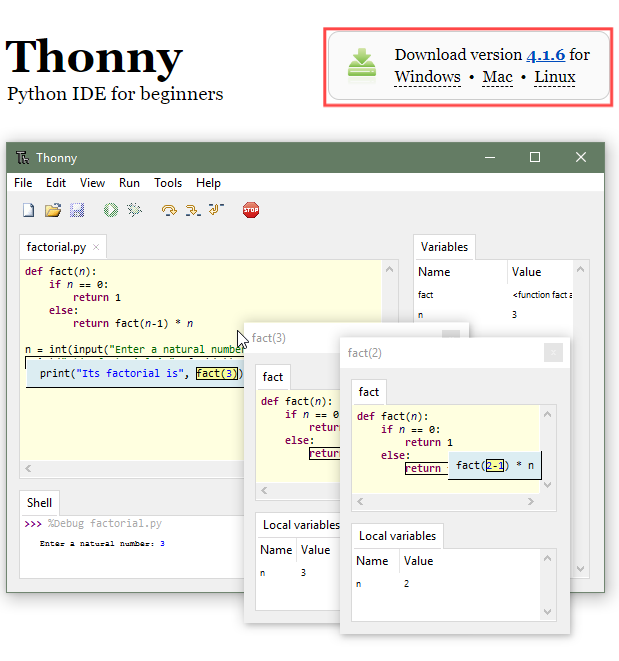
Note
You can also open “Super_Starter_Kit_for_ESP 2_S3/Python/Python_Software”, we have prepared it in advance.
Installation
Windows
The icon of Thonny after downloading is as below. Double click “thonny-4.1.6.exe”.
If you’re not familiar with computer software installation, you can simply keep clicking “Next” until the installation completes.
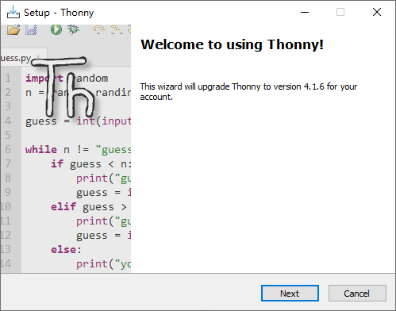 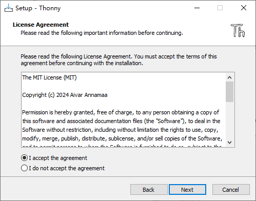If you want to change Thonny’s installation path, you can click “Browse” to modify it. After selecting installation path, click “OK”. If you do not want to change it, just click “Next”.
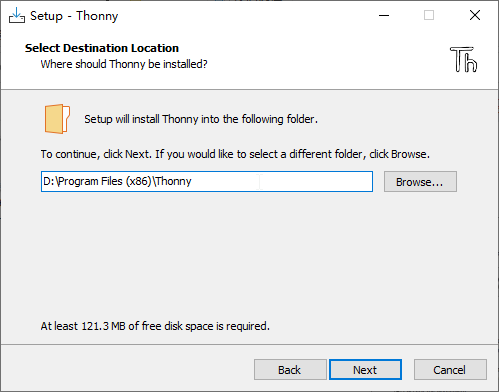Check “Create desktop icon” and then it will generate a shortcut on your desktop to facilitate you to open Thonny later.
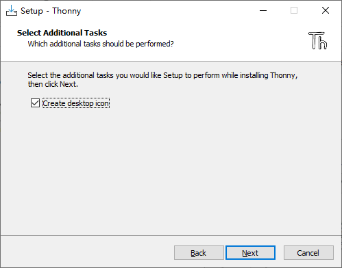Click “install” to install the software.
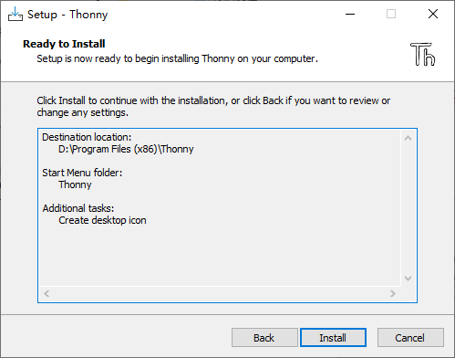 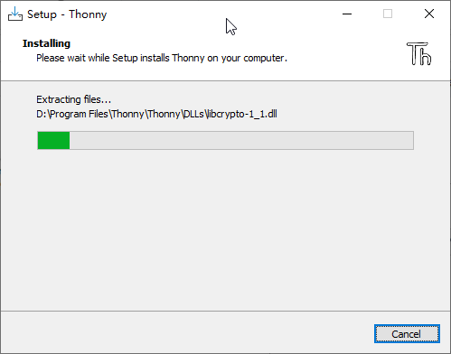 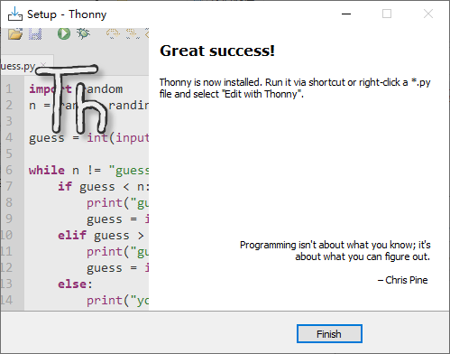
If you’ve check “Create desktop icon” during the installation process, you can see the below icon on your desktop.
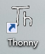
Basic Configuration of Thonny
Click the desktop icon of Thonny and you can see the interface of it as follows:
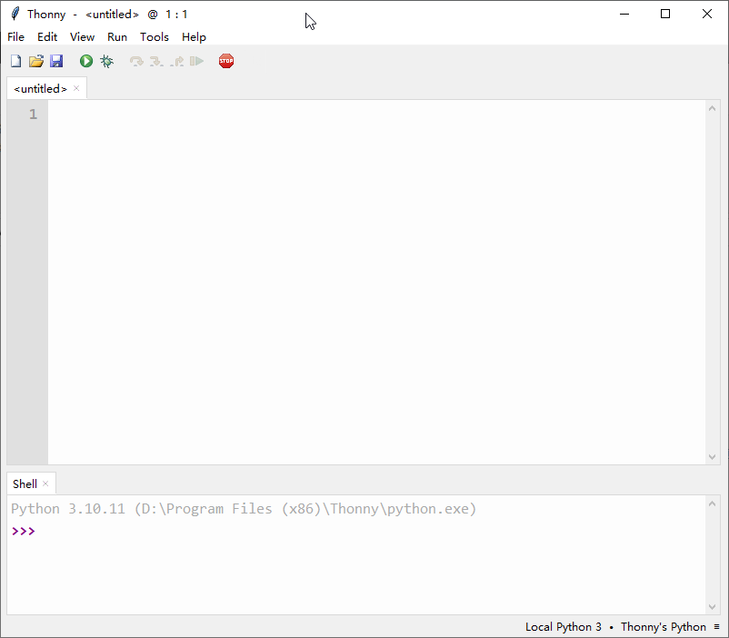Select “View” >> “Files” and “Shell”.
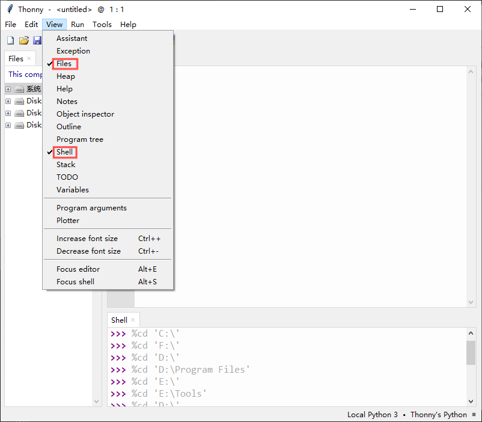 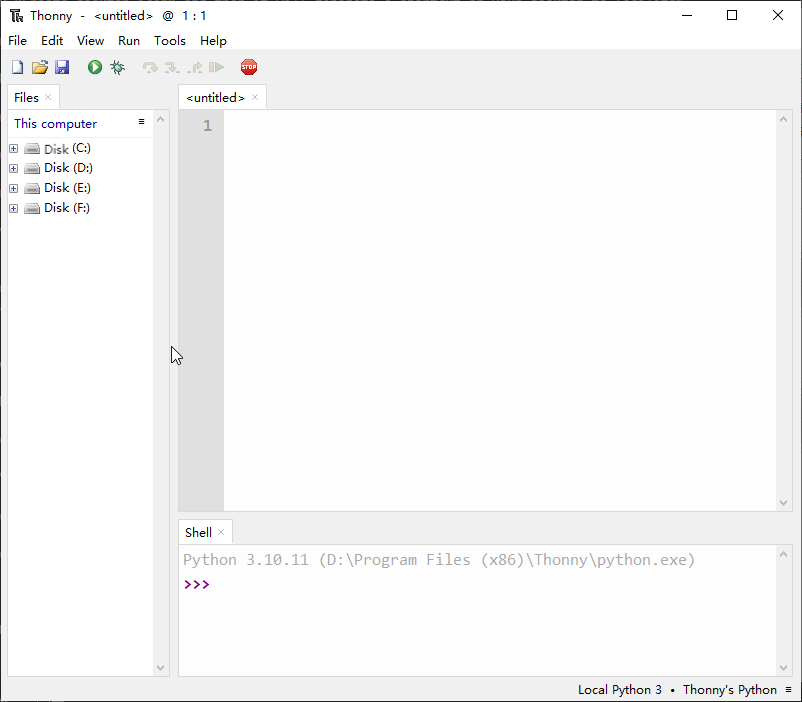Burning Micropython Firmware (Important)
Install Python3
Before burning the firmware to ESP32S3, we need to ensure that Python 3 has been installed on the computer. If you have not already installed it, please install it first. Python Official download address is:
Burning a Micropython Firmware
Windows
Micropython Firmware is also provided in our data folder “Super_Starter_Kit_for_ESP32_S3/Python/Python_Firmware”.
Window Connect your computer and ESP32-S3 with a USB cable.

Open Super_Starter_Kit_for_ESP32_S3/Python/Python_Firmware Enter cmd on path bar then press Enter.
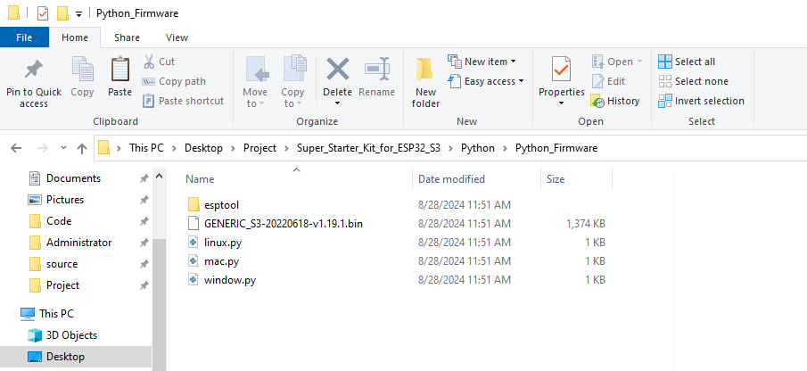 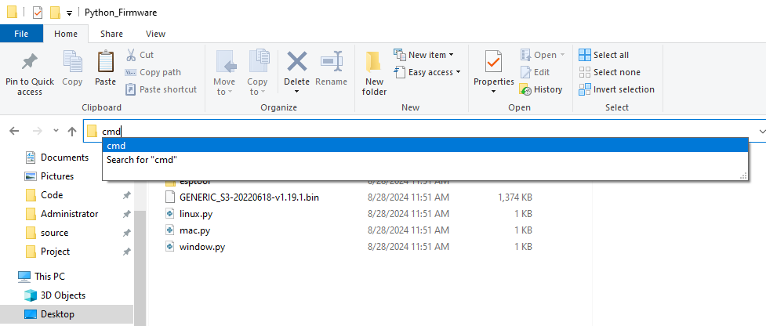
Here my python3 version is 3.8.1. Chances are your version will be higher; that’s normal

Enter python window.py. Micropython firmware will be automatically burned to ESP32S3.

As shown in the figure below after completion.

MacOS
Open Super_Starter_Kit_for_ESP32_S3/Python/Python_Firmware. Right- click and select New Terminal at Folder.

Here, my python3 version is 3.10.4

Enter “python3 mac. py” in the terminal, press Enter, and wait for the code to automatically burn the microython firmware into ESP32S3.

After completion, it is shown below.

Note: The operation of the Linux system is similar to that of the Mac system. Please refer to the Mac system.
Testing codes (Important)
Make sure that the ESP32S3 has burned the firmware and is connected to the computer through the data cable. Run Thonny. Click Run and select Configure interpreter.

Please configure according to the following figure. Note that the port numbers of USB Enhanced SERIAL may be different for different systems. Please select according to the actual situation. After configuration, click OK.

After configuration, every time you open Thonny, it will communicate with ESP32S3. The interface is shown below.
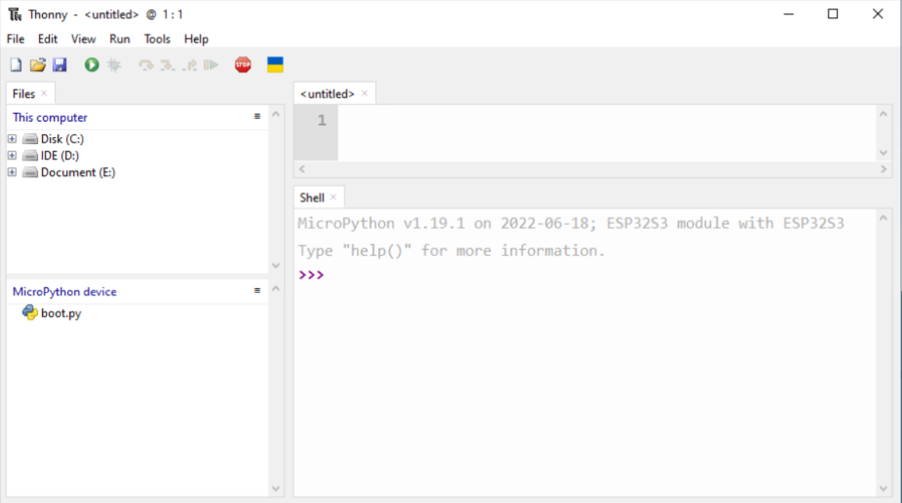Enter print('hello world') in “Shell” and press Enter.
Running Online
ESP32-S3 needs to be connected to a computer when it is run online. Users can use Thonny to writer and debug programs.
Open Thonny and click “Open…”.

On the newly pop-up window, click “This computer”.

In the new dialog box, select “HelloWorld.py” in “ESP32S3_Super_Starter_Kit/Pyt hon/Python_Codes/00.0_HelloWorld” folder.

Click “Run current script” to execute the program and “Hello World” will be printed in “Shell”.

Note
When running online, if you press the reset key of ESP32S3, user’s code will not be executed again. If you wish to run the code automatically after resetting the code, please refer to the following Running Offline.
Running Offline
After ESP32-S3 is reset, it runs the file boot.py in root directory first and then runs file main.py, and finally, it enters “Shell”. Therefore, to make ESP32-S3 execute user’s programs after resetting, we need to add a guiding program in boot.py to execute user’s code.
Move the program folder “Super_Starter_Kit_for_ESP32_S3/Python/Python_C odes” to disk(D) in advance with the path of “D:/MicroPy_Codes. Open “Thonny”.
Thonny Common Operation
Uploading Code to ESP32S3
Each time when ESP32-S3 restarts, if there is a “boot.py” in the root directory, it will execute this code first.

Select “Blink.py” in “01.1_Blink”, right-click your mouse and select “Upload to /” to upload code to ESP32S3’s root directory.

Downloading Code to Computer
Select “boot.py” in “MicroPython device”, right-click to select “Download to … ” to download the code to your computer.

Deleting Files from ESP32S3’s Root Directory
Select “boot.py” in “MicroPython device”, right-click it and select “Delete” to delete “boot.py” from ESP32S3’s root directory.

Deleting Files from your Computer Directory
Select “boot.py” in “00.1_Boot”, right-click it and select “Move to Recycle Bin” to delete it from “00.1_Boot”.

Creating and Saving the code
Click “File”>>“New” to create and write codes.

Enter codes in the newly opened file. Here we use codes of “HelloWorld.py” as an example.
Click “Save” on the menu bar. You can save the codes either to your computer or to ESP32S3.

Select “MicroPython device”, enter “main.py” in the newly pop-up window and click “OK”.

You can see that codes have been uploaded to ESP32S3
Disconnect and reconnect the USB cable, and you can see that the Shell printed “hello world.”